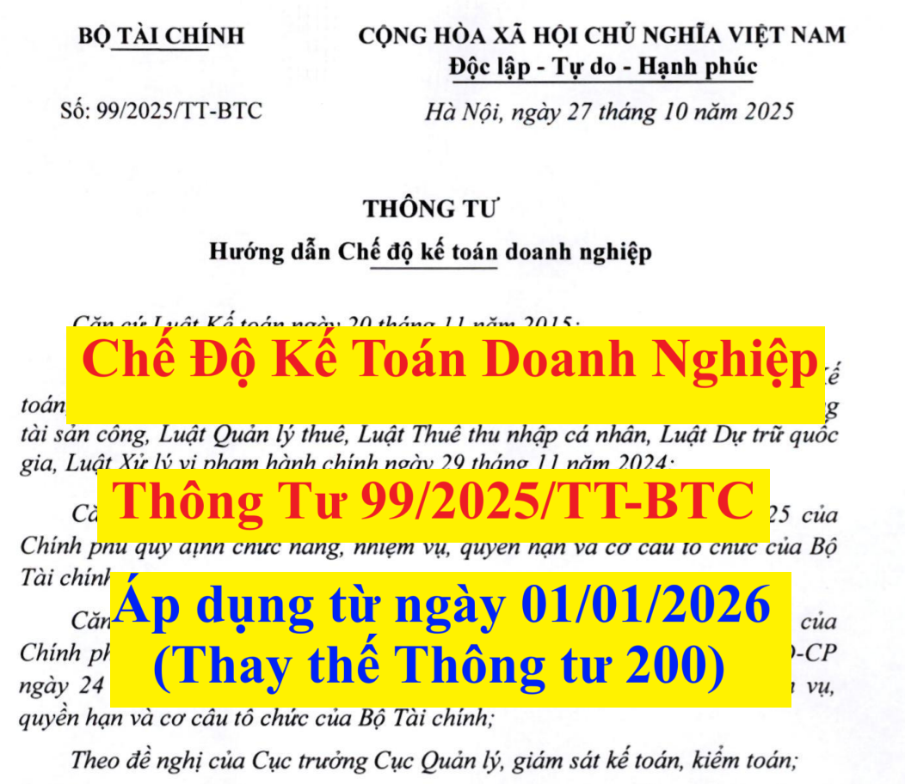

Ngày 27/10/2025, Bộ trưởng Bộ Tài chính ban hành Thông tư 99/2025/TT-BTC hướng dẫn Chế độ kế toán doanh nghiệp (Thay thế Thông tư 200/2014/TT-BTC) có hiệu lực thi hành kể từ ngày 01/01/2026 và áp dụng cho năm tài chính bắt đầu từ hoặc sau ngày 01/01/2026.
Nội dung của Thông tư 99/2025/TT-BTC như sau:
THÔNG TƯ HƯỚNG DẪN CHẾ ĐỘ KẾ TOÁN DOANH NGHIỆP Căn cứ Luật sửa đổi, bổ sung một số điều của Luật Chứng khoán, Luật Kế toán, Luật Kiểm toán độc lập, Luật Ngân sách nhà nước, Luật Quản lý, sử dụng tài sản công, Luật Quản lý thuế, Luật Thuế thu nhập cá nhân, Luật Dự trữ quốc gia, Luật Xử lý vi phạm hành chính ngày 29 tháng 11 năm 2024; Căn cứ Nghị định số 29/2025/NĐ-CP ngày 24 tháng 02 năm 2025 của Chính phủ quy định chức năng, nhiệm vụ, quyền hạn và cơ cấu tổ chức của Bộ Tài chính; Căn cứ Nghị định số 166/2025/NĐ-CP ngày 30 tháng 06 năm 2025 của Chính phủ về sửa đổi, bổ sung một số điều của Nghị định số 29/2025/NĐ-CP ngày 24 tháng 02 năm 2025 của Chính phủ quy định chức năng, nhiệm vụ, quyền hạn và cơ cấu tổ chức của Bộ Tài chính; Theo đề nghị của Cục trưởng Cục Quản lý, giám sát kế toán, kiểm toán; Bộ trưởng Bộ Tài chính ban hành Thông tư hướng dẫn Chế độ kế toán doanh nghiệp.
Chương I
Điều 1. Phạm vi điều chỉnhQUY ĐỊNH CHUNG Thông tư này hướng dẫn về chứng từ kế toán, tài khoản kế toán, ghi sổ kế toán, lập và trình bày Báo cáo tài chính của doanh nghiệp. Việc xác định nghĩa vụ thuế của doanh nghiệp đối với Ngân sách nhà nước được thực hiện theo quy định của pháp luật về thuế. Điều 2. Đối tượng áp dụng 1. Thông tư này hướng dẫn kế toán áp dụng cho các doanh nghiệp thuộc mọi lĩnh vực, mọi thành phần kinh tế. 2. Các tổ chức tín dụng, chi nhánh ngân hàng nước ngoài thực hiện chế độ kế toán hoặc văn bản quy phạm pháp luật về kế toán theo hướng dẫn của Ngân hàng Nhà nước Việt Nam. Điều 3. Công tác quản trị và kiểm soát nội bộ 1. Việc tạo lập, thực hiện, quản lý và kiểm soát các giao dịch kinh tế phát sinh của doanh nghiệp phải tuân thủ quy định của pháp luật, cơ chế chính sách có liên quan. 2. Doanh nghiệp có trách nhiệm tự xây dựng quy chế quản trị nội bộ (hoặc các tài liệu tương đương) và tổ chức kiểm soát nội bộ nhằm phân định rõ quyền, nghĩa vụ và trách nhiệm của các bộ phận và cá nhân có liên quan đến việc tạo lập, thực hiện, quản lý và kiểm soát các giao dịch kinh tế phát sinh tại doanh nghiệp, đảm bảo tuân thủ các quy định của pháp luật doanh nghiệp và pháp luật có liên quan. Điều 4. Đơn vị tiền tệ trong kế toán 1. “Đơn vị tiền tệ trong kế toán” là Đồng Việt Nam (ký hiệu quốc gia là “đ”; ký hiệu quốc tế là “VND”) được dùng để ghi sổ kế toán, lập và trình bày Báo cáo tài chính của doanh nghiệp. Trường hợp doanh nghiệp chủ yếu thu, chi bằng ngoại tệ, đáp ứng được các yếu tố quy định tại khoản 2, 3, 4 Điều này thì được chọn một loại ngoại tệ làm đơn vị tiền tệ trong kế toán để ghi sổ kế toán và chịu trách nhiệm về lựa chọn đó trước pháp luật. 2. Doanh nghiệp căn cứ vào các yếu tố sau đây để xác định đơn vị tiền tệ trong kế toán: a) Đơn vị tiền tệ mà ảnh hưởng chính đến giá bán hàng hóa, dịch vụ và thường là đơn vị tiền tệ dùng để niêm yết giá bán hàng hóa, dịch vụ và thanh toán; b) Đơn vị tiền tệ mà ảnh hưởng chính đến chi phí nhân công, chi phí nguyên vật liệu, chi phí sản xuất, kinh doanh khác và thường là đơn vị tiền tệ dùng để thanh toán cho các chi phí đó. 3. Trường hợp căn cứ vào các yếu tố tại khoản 2 Điều này mà doanh nghiệp chưa xác định được đơn vị tiền tệ trong kế toán thì các yếu tố sau đây cũng được xem xét để làm căn cứ xác định đơn vị tiền tệ trong kế toán của doanh nghiệp: a) Đơn vị tiền tệ sử dụng để huy động các nguồn lực tài chính (đơn vị tiền tệ sử dụng khi phát hành công cụ nợ, công cụ vốn,...); b) Đơn vị tiền tệ thường xuyên thu được từ các hoạt động kinh doanh và được sử dụng để tích trữ. 4. Đơn vị tiền tệ trong kế toán phản ánh các giao dịch, sự kiện, điều kiện liên quan đến hoạt động của doanh nghiệp. Sau khi xác định được đơn vị tiền tệ trong kế toán thì doanh nghiệp không được thay đổi, trừ khi có sự thay đổi lớn về hoạt động quản lý và kinh doanh dẫn đến thay đổi trọng yếu trong các giao dịch, sự kiện và điều kiện đó. Điều 5. Thay đổi đơn vị tiền tệ trong kế toán 1. Nguyên tắc khi thay đổi đơn vị tiền tệ trong kế toán Khi có sự thay đổi lớn về hoạt động quản lý và kinh doanh dẫn đến đơn vị tiền tệ trong kế toán mà doanh nghiệp sử dụng không còn thoả mãn các yếu tố nêu tại khoản 2, 3, 4 Điều 4 Thông tư này thì doanh nghiệp được thay đổi đơn vị tiền tệ trong kế toán và việc thay đổi này chỉ được thực hiện tại thời điểm bắt đầu niên độ kế toán mới. 2. Nguyên tắc lập Báo cáo tài chính khi thay đổi đơn vị tiền tệ trong kế toán a) Tại kỳ kế toán đầu tiên kể từ khi thay đổi, doanh nghiệp thực hiện chuyển đổi số dư các khoản mục trên sổ kế toán và Báo cáo tình hình tài chính sang đơn vị tiền tệ trong kế toán mới theo tỷ giá mua bán chuyển khoản trung bình (là trung bình cộng giữa tỷ giá mua chuyển khoản và tỷ giá bán chuyển khoản) của ngân hàng thương mại nơi doanh nghiệp thường xuyên có giao dịch (là ngân hàng thương mại mà doanh nghiệp có tần suất hoặc giá trị giao dịch nhiều hơn so với bên khác) tại ngày thay đổi đơn vị tiền tệ trong kế toán. b) Đối với thông tin so sánh (cột kỳ trước) trên Báo cáo kết quả hoạt động kinh doanh và Báo cáo lưu chuyển tiền tệ, doanh nghiệp áp dụng tỷ giá mua bán chuyển khoản trung bình của ngân hàng thương mại nơi doanh nghiệp thường xuyên có giao dịch của kỳ trước liền kề với kỳ thay đổi. c) Doanh nghiệp phải trình bày trên Bản thuyết minh Báo cáo tài chính lý do thay đổi đơn vị tiền tệ trong kế toán và khi có những ảnh hưởng đối với Báo cáo tài chính do việc thay đổi đơn vị tiền tệ trong kế toán. Điều 6. Công tác kế toán khi doanh nghiệp lựa chọn đơn vị tiền tệ trong kế toán không phải là Đồng Việt Nam 1. Báo cáo tài chính mang tính pháp lý để doanh nghiệp công bố ra công chúng và nộp cho các cơ quan có thẩm quyền tại Việt Nam là Báo cáo tài chính được trình bày bằng Đồng Việt Nam. Do đó, doanh nghiệp phải chuyển đổi Báo cáo tài chính từ đơn vị tiền tệ trong kế toán sang Đồng Việt Nam theo hướng dẫn tại khoản 3 Điều này, trừ trường hợp pháp luật có quy định khác. 2. Trường hợp pháp luật quy định Báo cáo tài chính của doanh nghiệp phải được kiểm toán bởi tổ chức kiểm toán độc lập thì Báo cáo tài chính được kiểm toán là Báo cáo tài chính được trình bày bằng Đồng Việt Nam. 3. Phương pháp chuyển đổi Báo cáo tài chính lập bằng ngoại tệ sang Đồng Việt Nam a) Khi chuyển đổi Báo cáo tài chính được lập bằng ngoại tệ sang Đồng Việt Nam, doanh nghiệp phải quy đổi các chỉ tiêu của Báo cáo tài chính theo nguyên tắc sau: - Tài sản và nợ phải trả được quy đổi ra Đồng Việt Nam theo tỷ giá mua bán chuyển khoản trung bình của ngân hàng thương mại nơi doanh nghiệp thường xuyên có giao dịch tại thời điểm kết thúc kỳ kế toán; - Vốn chủ sở hữu (vốn góp của chủ sở hữu, thặng dư vốn, vốn khác, quyền chọn chuyển đổi trái phiếu) được quy đổi ra Đồng Việt Nam theo tỷ giá giao dịch thực tế tại ngày góp vốn; - Chênh lệch đánh giá lại tài sản được quy đổi ra Đồng Việt Nam theo tỷ giá giao dịch thực tế tại ngày đánh giá; - Lợi nhuận sau thuế chưa phân phối, các quỹ trích từ lợi nhuận sau thuế chưa phân phối phát sinh trong từng kỳ được quy đổi ra Đồng Việt Nam bằng cách tính toán theo các khoản mục của Báo cáo kết quả hoạt động kinh doanh. Lợi nhuận sau thuế chưa phân phối còn lại phải được quy đổi ra Đồng Việt Nam theo tỷ giá ghi sổ của khoản mục lợi nhuận sau thuế chưa phân phối; - Các khoản mục thuộc Báo cáo kết quả hoạt động kinh doanh và Báo cáo lưu chuyển tiền tệ được quy đổi ra Đồng Việt Nam theo tỷ giá giao dịch thực tế tại thời điểm phát sinh giao dịch. Trường hợp tỷ giá bình quân kỳ kế toán xấp xỉ với tỷ giá thực tế tại thời điểm phát sinh giao dịch (chênh lệch không vượt quá biên độ tỷ giá giao ngay theo quy định của Ngân hàng Nhà nước Việt Nam) thì có thể áp dụng theo tỷ giá bình quân kỳ kế toán (nếu lựa chọn). b) Phương pháp kế toán chênh lệch tỷ giá do chuyển đổi Báo cáo tài chính được lập bằng ngoại tệ ra Đồng Việt Nam. Chênh lệch tỷ giá phát sinh khi chuyển đổi Báo cáo tài chính được lập bằng ngoại tệ ra Đồng Việt Nam được ghi nhận trên chỉ tiêu “Chênh lệch tỷ giá hối đoái” thuộc phần vốn chủ sở hữu của Báo cáo tình hình tài chính. c) Khi chuyển đổi Báo cáo tài chính được lập bằng ngoại tệ sang Đồng Việt Nam, doanh nghiệp phải trình bày rõ trên Bản thuyết minh Báo cáo tài chính những ảnh hưởng phát sinh đối với Báo cáo tài chính do việc chuyển đổi Báo cáo tài chính từ ngoại tệ sang Đồng Việt Nam. Điều 7. Tổ chức bộ máy kế toán và công tác kế toán tại đơn vị trực thuộc doanh nghiệp 1. Đơn vị trực thuộc là đơn vị phụ thuộc theo quy định của pháp luật doanh nghiệp. 2. Doanh nghiệp có trách nhiệm tổ chức bộ máy kế toán và được quyết định công tác kế toán cho các đơn vị trực thuộc phù hợp với đặc điểm hoạt động sản xuất kinh doanh, yêu cầu quản lý của đơn vị mình và không trái với quy định của pháp luật. 3. Việc tổ chức bộ máy kế toán và công tác hạch toán kế toán tại đơn vị trực thuộc doanh nghiệp được thực hiện như sau: a) Doanh nghiệp được quyền phân cấp cho đơn vị trực thuộc trong việc ghi nhận khoản vốn mà doanh nghiệp cấp cho đơn vị trực thuộc là nợ phải trả hoặc vốn chủ sở hữu, ghi nhận hoặc không ghi nhận doanh thu, giá vốn khi luân chuyển sản phẩm, hàng hóa, dịch vụ giữa các khâu trong nội bộ mà không phụ thuộc vào hình thức của chứng từ kế toán (hóa đơn hay chứng từ luân chuyển nội bộ) phù hợp với mô hình và yêu cầu quản lý hoạt động sản xuất kinh doanh của doanh nghiệp; b) Doanh nghiệp được quyền phân cấp cho đơn vị trực thuộc lập Báo cáo tài chính hay không lập Báo cáo tài chính. Tuy nhiên, Báo cáo tài chính của doanh nghiệp khi nộp cho cơ quan có thẩm quyền hoặc công khai theo quy định đều phải bao gồm thông tin tài chính của cả trụ sở chính và các đơn vị trực thuộc doanh nghiệp bất kể doanh nghiệp có phân cấp hay không phân cấp cho đơn vị trực thuộc lập Báo cáo tài chính.
Chương II
Điều 8. Quy định chung về chứng từ kế toánCHỨNG TỪ KẾ TOÁN Chứng từ kế toán của doanh nghiệp phải được thực hiện theo đúng quy định của Luật Kế toán, các văn bản hướng dẫn Luật Kế toán và các văn bản sửa đổi, bổ sung hoặc thay thế. Điều 9. Hệ thống biểu mẫu chứng từ kế toán 1. Doanh nghiệp tham khảo để áp dụng biểu mẫu hệ thống chứng từ kế toán tại Phụ lục I ban hành kèm theo Thông tư này. 2. Trường hợp để phù hợp với đặc điểm hoạt động sản xuất kinh doanh và yêu cầu quản lý, doanh nghiệp được thiết kế thêm hoặc sửa đổi, bổ sung biểu mẫu chứng từ kế toán so với biểu mẫu hướng dẫn tại Phụ lục I ban hành kèm theo Thông tư này. Biểu mẫu chứng từ kế toán của doanh nghiệp khi thiết kế thêm hoặc sửa đổi, bổ sung phải đảm bảo tuân thủ quy định tại Điều 16 Luật Kế toán và phải phản ánh đầy đủ, kịp thời, trung thực, minh bạch, dễ kiểm tra, kiểm soát và đối chiếu được tài sản, nguồn vốn của doanh nghiệp. Khi thiết kế thêm hoặc sửa đổi, bổ sung về biểu mẫu chứng từ kế toán thì doanh nghiệp có trách nhiệm ban hành Quy chế hạch toán kế toán (hoặc các tài liệu tương đương) về các nội dung sửa đổi, bổ sung để làm cơ sở thực hiện. Quy chế phải nêu rõ sự cần thiết của việc sửa đổi, bổ sung đó và trách nhiệm của doanh nghiệp trước pháp luật về các nội dung đã sửa đổi, bổ sung. Trường hợp doanh nghiệp không thiết kế thêm hoặc sửa đổi, bổ sung về biểu mẫu chứng từ kế toán thì áp dụng hệ thống chứng từ kế toán hướng dẫn tại Phụ lục I ban hành kèm theo Thông tư này. 3. Doanh nghiệp có phát sinh các chứng từ thuộc đối tượng điều chỉnh của pháp luật khác thì chứng từ kế toán phải thực hiện theo quy định của pháp luật đó. Điều 10. Lập, ký và kiểm soát chứng từ kế toán 1. Mọi nghiệp vụ kinh tế, tài chính phát sinh liên quan đến hoạt động của doanh nghiệp phải lập chứng từ kế toán. Chứng từ kế toán chỉ lập một lần cho mỗi nghiệp vụ kinh tế, tài chính phát sinh. 2. Việc lập và ký chứng từ kế toán được thực hiện theo quy định của Luật Kế toán, văn bản hướng dẫn Luật kế toán, hướng dẫn tại Thông tư này và các văn bản sửa đổi, bổ sung, thay thế. 3. Việc phân cấp ký trên chứng từ kế toán của doanh nghiệp phải phù hợp với quy định của pháp luật, yêu cầu quản lý, quy chế quản trị nội bộ để đảm bảo kiểm soát chặt chẽ, an toàn tài sản, nguồn vốn của doanh nghiệp và xác định được trách nhiệm của cá nhân có liên quan. 4. Kế toán trưởng (hoặc người được kế toán trưởng ủy quyền) không được ký “thừa ủy quyền” chức danh của người quản lý, điều hành của doanh nghiệp trên chứng từ kế toán, trừ trường hợp pháp luật có quy định khác.
Chương III
Điều 11. Hệ thống tài khoản kế toánTÀI KHOẢN KẾ TOÁN 1. Doanh nghiệp áp dụng hệ thống tài khoản kế toán tại Phụ lục II ban hành kèm theo Thông tư này để phục vụ việc ghi sổ kế toán các giao dịch kinh tế phát sinh tại doanh nghiệp. 2. Trường hợp để phù hợp với đặc điểm hoạt động sản xuất, kinh doanh và yêu cầu quản lý của đơn vị, doanh nghiệp được sửa đổi, bổ sung về tên, số hiệu, kết cấu và nội dung phản ánh của các tài khoản kế toán hướng dẫn tại Phụ lục II ban hành kèm theo Thông tư này. Việc sửa đổi, bổ sung phải đảm bảo phân loại và hệ thống hóa được các nghiệp vụ phát sinh theo nội dung kinh tế, không trùng lặp đối tượng, tuân thủ các nguyên tắc kế toán theo quy định và không được làm thay đổi hoặc ảnh hưởng đến các chỉ tiêu, thông tin trình bày trên Báo cáo tài chính. Khi sửa đổi, bổ sung về tên, số hiệu, kết cấu và nội dung phản ánh của các tài khoản kế toán, doanh nghiệp có trách nhiệm ban hành Quy chế hạch toán kế toán (hoặc các tài liệu tương đương) về các nội dung sửa đổi, bổ sung để làm cơ sở thực hiện. Quy chế phải nêu rõ sự cần thiết của việc sửa đổi, bổ sung đó và trách nhiệm của doanh nghiệp trước pháp luật về các nội dung đã sửa đổi, bổ sung. Trường hợp doanh nghiệp không sửa đổi, bổ sung về tên, số hiệu, kết cấu và nội dung phản ánh của các tài khoản kế toán thì áp dụng hệ thống tài khoản kế toán hướng dẫn tại Phụ lục II ban hành kèm theo Thông tư này. 3. Thông tư này chỉ hướng dẫn về nội dung và phương pháp kế toán một số nghiệp vụ kinh tế chủ yếu. Trường hợp doanh nghiệp có các nghiệp vụ kinh tế phát sinh chưa được hướng dẫn kế toán tại Thông tư này, doanh nghiệp căn cứ vào nội dung, bản chất của giao dịch kinh tế phát sinh, quy định của Luật Kế toán, văn bản hướng dẫn Luật Kế toán, Chuẩn mực kế toán Việt Nam và các nguyên tắc hướng dẫn tại Thông tư này để thực hiện. Chương IV SỔ KẾ TOÁN 1. Sổ kế toán của doanh nghiệp phải được thực hiện theo đúng quy định của Luật Kế toán, các văn bản hướng dẫn Luật Kế toán và các văn bản sửa đổi, bổ sung hoặc thay thế. 2. Doanh nghiệp tham khảo để áp dụng biểu mẫu sổ kế toán tại Phụ lục III ban hành kèm theo Thông tư này. Trường hợp để phù hợp với đặc điểm hoạt động sản xuất kinh doanh và yêu cầu quản lý, doanh nghiệp được thiết kế thêm hoặc sửa đổi, bổ sung biểu mẫu sổ kế toán so với biểu mẫu hướng dẫn tại Phụ lục III ban hành kèm theo Thông tư này. Biểu mẫu sổ kế toán của doanh nghiệp khi thiết kế thêm hoặc sửa đổi, bổ sung phải đảm bảo tuân thủ quy định tại các khoản 1, 2, 3, 4 Điều 24 Luật Kế toán và phải phản ánh đầy đủ, kịp thời, trung thực, minh bạch, dễ kiểm tra, kiểm soát, đối chiếu được tài sản, nguồn vốn của doanh nghiệp. Khi thiết kế thêm hoặc sửa đổi, bổ sung về biểu mẫu sổ kế toán thì doanh nghiệp có trách nhiệm ban hành Quy chế hạch toán kế toán (hoặc các tài liệu tương đương) về các nội dung sửa đổi, bổ sung để làm cơ sở thực hiện. Quy chế phải nêu rõ sự cần thiết của việc sửa đổi, bổ sung đó và trách nhiệm của doanh nghiệp trước pháp luật về các nội dung đã sửa đổi, bổ sung. Trường hợp doanh nghiệp không thiết kế thêm hoặc sửa đổi, bổ sung về biểu mẫu sổ kế toán thì áp dụng biểu mẫu sổ kế toán hướng dẫn tại Phụ lục III ban hành kèm theo Thông tư này. Điều 13. Mở sổ, ghi sổ và khóa sổ kế toán 1. Mở sổ: Sổ kế toán phải được mở vào đầu kỳ kế toán năm. Đối với doanh nghiệp mới thành lập, sổ kế toán phải được mở từ ngày thành lập. 2. Ghi sổ: Doanh nghiệp phải căn cứ vào chứng từ kế toán để ghi sổ kế toán theo quy định của Luật Kế toán và các văn bản sửa đổi, bổ sung hoặc thay thế. Sổ kế toán phải được ghi kịp thời, rõ ràng, đầy đủ theo các nội dung của sổ. Thông tin, số liệu ghi vào sổ kế toán phải chính xác, trung thực theo đúng với chứng từ kế toán. 3. Khóa sổ: Doanh nghiệp phải khóa sổ kế toán tại thời điểm kết thúc kỳ kế toán để lập Báo cáo tài chính và trong các trường hợp khác theo quy định của pháp luật. Chương V BÁO CÁO TÀI CHÍNH 1. Báo cáo tài chính dùng để cung cấp thông tin về tình hình tài chính, kết quả kinh doanh và các luồng tiền của doanh nghiệp, đáp ứng yêu cầu quản lý của chủ sở hữu doanh nghiệp, cơ quan có thẩm quyền và nhu cầu của người sử dụng Báo cáo tài chính trong việc đưa ra các quyết định kinh tế. Báo cáo tài chính phải cung cấp những thông tin của một doanh nghiệp về: a) Tài sản; b) Nợ phải trả; c) Vốn chủ sở hữu; d) Doanh thu, thu nhập khác, chi phí sản xuất kinh doanh và chi phí khác; đ) Lãi, lỗ và phân chia kết quả kinh doanh; e) Các luồng tiền. 2. Ngoài các thông tin tại khoản 1 Điều này, doanh nghiệp còn phải cung cấp các thông tin khác trong “Bản thuyết minh Báo cáo tài chính” nhằm giải trình thêm về các chỉ tiêu đã phản ánh trên các Báo cáo tài chính và các chính sách kế toán đã áp dụng để ghi nhận các nghiệp vụ kinh tế phát sinh, lập và trình bày Báo cáo tài chính của doanh nghiệp. Điều 15. Kỳ lập Báo cáo tài chính 1. Kỳ lập Báo cáo tài chính năm: Các doanh nghiệp phải lập Báo cáo tài chính năm theo quy định của Luật Kế toán. 2. Kỳ lập Báo cáo tài chính giữa niên độ: Báo cáo tài chính giữa niên độ gồm Báo cáo tài chính quý (bao gồm cả quý IV) và Báo cáo tài chính bán niên (Báo cáo tài chính 6 tháng). 3. Kỳ lập Báo cáo tài chính khác a) Doanh nghiệp lập Báo cáo tài chính theo kỳ kế toán khác (ví dụ Báo cáo tài chính tháng,...) theo yêu cầu của pháp luật, của công ty mẹ hoặc của chủ sở hữu. b) Doanh nghiệp bị chia, bị hợp nhất, bị sáp nhập, chuyển đổi loại hình doanh nghiệp, giải thể, phá sản phải lập Báo cáo tài chính tại thời điểm chia, hợp nhất, sáp nhập, chuyển đổi loại hình doanh nghiệp, giải thể, phá sản theo quy định của pháp luật. Điều 16. Đối tượng, trách nhiệm lập Báo cáo tài chính 1. Đối tượng lập Báo cáo tài chính Các doanh nghiệp thuộc mọi lĩnh vực, mọi thành phần kinh tế phải lập Báo cáo tài chính năm dạng đầy đủ theo quy định tại Phụ lục IV ban hành kèm theo Thông tư này. Việc lập Báo cáo tài chính giữa niên độ, Báo cáo tài chính theo kỳ kế toán khác thực hiện theo quy định của pháp luật có liên quan hoặc yêu cầu quản lý của đơn vị. Trường hợp theo quy định của pháp luật có liên quan, doanh nghiệp thuộc đối tượng phải lập Báo cáo tài chính giữa niên độ nhưng pháp luật đó không có quy định cụ thể về loại Báo cáo tài chính giữa niên độ thì doanh nghiệp được lựa chọn lập Báo cáo tài chính giữa niên độ dưới dạng đầy đủ hoặc tóm lược. 2. Doanh nghiệp có các đơn vị trực thuộc phải tổng hợp cả thông tin tài chính của trụ sở chính và các đơn vị trực thuộc vào Báo cáo tài chính của doanh nghiệp trên cơ sở loại trừ tất cả các giao dịch nội bộ giữa trụ sở chính với các đơn vị trực thuộc hoặc giữa các đơn vị trực thuộc với nhau. Trong trường hợp này, trụ sở chính và các đơn vị trực thuộc của doanh nghiệp không bắt buộc phải lập Báo cáo tài chính của đơn vị mình, trừ trường hợp pháp luật khác có yêu cầu. 3. Việc lập, trình bày Báo cáo tài chính hợp nhất năm và Báo cáo tài chính hợp nhất giữa niên độ thực hiện theo quy định của pháp luật về Báo cáo tài chính hợp nhất. 4. Việc lập và ký Báo cáo tài chính được thực hiện theo quy định của Luật Kế toán, văn bản hướng dẫn Luật Kế toán và các văn bản sửa đổi, bổ sung hoặc thay thế. Trường hợp doanh nghiệp thuê đơn vị kinh doanh dịch vụ kế toán thực hiện dịch vụ lập và trình bày Báo cáo tài chính, dịch vụ làm kế toán trưởng thì tại phần người lập, kế toán trưởng trên Báo cáo tài chính của doanh nghiệp phải ghi rõ số Giấy phép hành nghề dịch vụ kế toán của người hành nghề và tên đơn vị cung cấp dịch vụ kế toán theo quy định. Điều 17. Hệ thống Báo cáo tài chính của doanh nghiệp 1. Hệ thống Báo cáo tài chính gồm: - Báo cáo tình hình tài chính; - Báo cáo kết quả hoạt động kinh doanh; - Báo cáo lưu chuyển tiền tệ; - Bản thuyết minh Báo cáo tài chính; 2. Báo cáo tài chính năm: a) Báo cáo tài chính năm đối với doanh nghiệp đáp ứng giả định hoạt động liên tục, gồm:
b) Báo cáo tài chính năm đối với doanh nghiệp không đáp ứng giả định hoạt động liên tục, gồm:
3. Báo cáo tài chính giữa niên độ gồm: a) Báo cáo tài chính giữa niên độ dạng đầy đủ, gồm:
b) Báo cáo tài chính giữa niên độ dạng tóm lược, gồm:
4. Biểu mẫu Báo cáo tài chính năm, Báo cáo tài chính giữa niên độ (dạng đầy đủ và dạng tóm lược) được hướng dẫn tại Phụ lục IV ban hành kèm theo Thông tư này. Những chỉ tiêu không có số liệu được miễn trình bày trên Báo cáo tài chính, doanh nghiệp chủ động đánh lại số thứ tự theo nguyên tắc liên tục trong mỗi phần nhưng không được đánh lại “Mã số” chỉ tiêu. Điều 18. Sửa đổi, bổ sung Báo cáo tài chính 1. Doanh nghiệp áp dụng hệ thống Báo cáo tài chính tại Phụ lục IV ban hành kèm theo Thông tư này để lập và trình bày Báo cáo tài chính của đơn vị. Trường hợp để phù hợp với đặc điểm hoạt động sản xuất kinh doanh và yêu cầu quản lý, doanh nghiệp được bổ sung thêm các chỉ tiêu của Báo cáo tài chính hướng dẫn tại Phụ lục IV ban hành kèm theo Thông tư này. Việc bổ sung đó phải đảm bảo quy định tại khoản 1, 2 Điều 29 Luật Kế toán và tuân thủ các nguyên tắc lập và trình bày Báo cáo tài chính hướng dẫn tại Thông tư này. Doanh nghiệp phải thuyết minh trên Báo cáo tài chính về những nội dung đã bổ sung so với biểu mẫu Báo cáo tài chính hướng dẫn tại Phụ lục IV ban hành kèm theo Thông tư này. Khi bổ sung thêm các chỉ tiêu của Báo cáo tài chính thì doanh nghiệp có trách nhiệm ban hành Quy chế hạch toán kế toán (hoặc các tài liệu tương đương) về các nội dung bổ sung đó để làm cơ sở thực hiện. Quy chế phải nêu rõ sự cần thiết của việc bổ sung đó và trách nhiệm của doanh nghiệp trước pháp luật về các nội dung đã bổ sung. Trường hợp doanh nghiệp không bổ sung thêm các chỉ tiêu của Báo cáo tài chính thì áp dụng biểu mẫu Báo cáo tài chính hướng dẫn tại Phụ lục IV ban hành kèm theo Thông tư này. 2. Trường hợp doanh nghiệp có đặc thù dẫn đến không thể bổ sung thêm hoặc cần sửa đổi các chỉ tiêu của Báo cáo tài chính hướng dẫn tại Phụ lục IV ban hành kèm theo Thông tư này thì báo cáo Bộ Tài chính để được hướng dẫn lập và trình bày Báo cáo tài chính. Điều 19. Yêu cầu đối với thông tin trình bày trên Báo cáo tài chính 1. Thông tin trình bày trên Báo cáo tài chính phải phản ánh trung thực, hợp lý tình hình tài chính, kết quả kinh doanh, dòng tiền và các thông tin tài chính khác của doanh nghiệp. Thông tin trên Báo cáo tài chính phải đảm bảo tính đầy đủ, khách quan, không có sai sót. - Thông tin được coi là đầy đủ khi Báo cáo tài chính bao gồm tất cả các thông tin cần thiết để giúp người sử dụng Báo cáo tài chính hiểu được bản chất, hình thức và rủi ro của các giao dịch và sự kiện. Đối với một số khoản mục, việc trình bày đầy đủ còn phải mô tả thêm các thông tin về chất lượng, các yếu tố và tình huống có thể ảnh hưởng tới chất lượng và bản chất của khoản mục. - Thông tin khách quan là thông tin khi Báo cáo tài chính trình bày không thiên vị, phải đảm bảo tính trung lập, đúng với thực tế, không bị xuyên tạc, không bị bóp méo cũng như không làm thay đổi mức độ ảnh hưởng của thông tin tài chính theo hướng có lợi hoặc không có lợi cho người sử dụng Báo cáo tài chính. - Không có sai sót là Báo cáo tài chính không có sự bỏ sót, nhầm lẫn, gian lận khi mô tả hiện tượng, lựa chọn, áp dụng và cung cấp các thông tin báo cáo. Không có sai sót không có nghĩa là hoàn toàn chính xác trong tất cả các khía cạnh. Việc trình bày một ước tính được coi là không có sai sót nếu bản chất và các hạn chế của quá trình ước tính đó được giải thích, mô tả rõ ràng và không có sai sót trong việc lựa chọn số liệu phù hợp trong quá trình ước tính. 2. Thông tin tài chính phải thích hợp để giúp người sử dụng Báo cáo tài chính dự đoán, phân tích và đưa ra các quyết định kinh tế. 3. Thông tin tài chính phải được trình bày đầy đủ trên mọi khía cạnh trọng yếu. Thông tin được coi là trọng yếu nếu việc bỏ sót hoặc sai sót thông tin đó có thể làm sai lệch đáng kể Báo cáo tài chính, làm ảnh hưởng đến quyết định kinh tế của người sử dụng Báo cáo tài chính. Mức độ trọng yếu phụ thuộc vào quy mô hoặc tính chất hoặc cả quy mô và tính chất của các bỏ sót hoặc sai sót được đánh giá trong hoàn cảnh cụ thể. 4. Thông tin phải đảm bảo có thể kiểm chứng, kịp thời và dễ hiểu. 5. Thông tin tài chính phải được trình bày nhất quán, có thể so sánh giữa các kỳ kế toán và giữa các doanh nghiệp với nhau. Khi doanh nghiệp thay đổi nguyên tắc lập và trình bày Báo cáo tài chính từ đáp ứng giả định hoạt động liên tục sang không đáp ứng giả định hoạt động liên tục hoặc ngược lại thì doanh nghiệp phải trình bày trên Thuyết minh Báo cáo tài chính về tính chất, số liệu và lý do việc phân loại lại số liệu so sánh các chỉ tiêu, khoản mục của Báo cáo tài chính nhằm đảm bảo khả năng so sánh với kỳ hiện tại (trừ khi việc này không thể thực hiện được). Điều 20. Nguyên tắc lập và trình bày Báo cáo tài chính của doanh nghiệp đáp ứng giả định hoạt động liên tục 1. Việc lập và trình bày Báo cáo tài chính phải tuân thủ các quy định tại Chuẩn mực kế toán Việt Nam số 21 - Trình bày Báo cáo tài chính và các Chuẩn mực kế toán Việt Nam khác có liên quan. Các thông tin trọng yếu phải được giải trình để giúp người đọc hiểu đúng thực trạng tình hình tài chính của doanh nghiệp. 2. Báo cáo tài chính phải phản ánh đúng bản chất kinh tế của các giao dịch và sự kiện hơn là hình thức pháp lý của các giao dịch và sự kiện đó (tôn trọng bản chất hơn hình thức). 3. Tài sản không được ghi nhận cao hơn giá trị có thể thu hồi; Nợ phải trả không được ghi nhận thấp hơn nghĩa vụ phải thanh toán. 4. Phân loại tài sản và nợ phải trả: Tài sản và nợ phải trả trên Báo cáo tình hình tài chính phải được trình bày thành ngắn hạn và dài hạn, các chỉ tiêu được sắp xếp theo tính thanh khoản giảm dần. a) Một tài sản được phân loại là ngắn hạn khi thuộc một trong các trường hợp sau: (i) Doanh nghiệp dự kiến thu hồi được tài sản hoặc dự tính bán hay sử dụng tài sản đó trong một chu kỳ kinh doanh thông thường; (ii) Doanh nghiệp nắm giữ tài sản đó chủ yếu cho mục đích thương mại; (iii) Doanh nghiệp dự kiến thu hồi tài sản trong thời hạn từ 12 tháng trở xuống kể từ ngày kết thúc kỳ kế toán; (iv) Tài sản là tiền hoặc tương đương tiền, trừ khi tài sản này bị cấm trao đổi hoặc không được sử dụng để thanh toán cho một nghĩa vụ nợ phải trả trên 12 tháng kể từ ngày kết thúc kỳ kế toán. Những tài sản không được phân loại là ngắn hạn theo hướng dẫn nêu trên thì được phân loại là tài sản dài hạn. b) Một khoản nợ phải trả được phân loại là ngắn hạn khi thuộc một trong các trường hợp sau: (i) Doanh nghiệp dự kiến thanh toán khoản nợ phải trả này trong một chu kỳ kinh doanh thông thường; (ii) Doanh nghiệp nắm giữ khoản nợ phải trả chủ yếu vì mục đích kinh doanh; (iii) Khoản nợ phải trả đến hạn thanh toán trong thời hạn từ 12 tháng trở xuống kể từ ngày kết thúc kỳ kế toán; (iv) Doanh nghiệp không có quyền từ chối nghĩa vụ thanh toán khoản nợ phải trả (các khoản vay, mượn tiền, nợ thuê tài chính đến hạn trả, kể cả trường hợp khoản nợ phải trả sẽ được doanh nghiệp thanh toán bằng cách phát hành các công cụ vốn theo quyền chọn của bên đối tác) tại bất kỳ thời điểm nào trong thời hạn từ 12 tháng trở xuống kể từ ngày kết thúc kỳ kế toán. Các khoản nợ phải trả (ví dụ như phải trả cho nhà cung cấp, chi phí phải trả nhân viên và chi phí phải trả khác cho hoạt động kinh doanh) là một phần của vốn lưu động được sử dụng trong chu kỳ kinh doanh thông thường thì doanh nghiệp phải phân loại các khoản nợ phải trả đó là nợ ngắn hạn ngay cả khi doanh nghiệp có nghĩa vụ thanh toán các khoản nợ phải trả này trong khoảng thời gian trên 12 tháng kể từ ngày kết thúc kỳ kế toán. Những khoản nợ phải trả không được phân loại là ngắn hạn theo hướng dẫn nêu trên thì được phân loại là nợ dài hạn. Đối với các khoản nợ phải trả được phân loại là ngắn hạn, nếu các sự kiện sau đây xảy ra trong khoảng thời gian từ sau ngày kết thúc kỳ kế toán đến ngày phát hành báo cáo tài chính thì những sự kiện này là các sự kiện phát sinh sau không cần điều chỉnh: - Thỏa thuận gia hạn khoản nợ phải trả ngắn hạn thành dài hạn; - Khắc phục vi phạm trong thỏa thuận đối với nợ phải trả dài hạn; và - Chủ nợ cho phép ân hạn để khắc phục vi phạm của thỏa thuận đối với nợ phải trả dài hạn ít nhất là 12 tháng sau ngày kết thúc kỳ kế toán. Đồng thời, doanh nghiệp phải thuyết minh trên Thuyết minh Báo cáo tài chính các sự kiện phát sinh sau này theo quy định. c) Trường hợp doanh nghiệp lựa chọn phân loại tài sản và nợ phải trả khi trình bày Báo cáo tình hình tài chính theo chu kỳ kinh doanh thông thường, doanh nghiệp phải thuyết minh giá trị dự kiến sẽ được thu hồi hoặc phải thanh toán trong khoảng thời gian trên 12 tháng đối với từng dòng chỉ tiêu tài sản và nợ phải trả khi các chỉ tiêu này bao gồm giá trị dự kiến sẽ được thu hồi hay phải thanh toán: (i) từ 12 tháng trở xuống kể từ ngày kết thúc kỳ kế toán, và (ii) trên 12 tháng kể từ ngày kết thúc kỳ kế toán. Đồng thời chu kỳ hoạt động kinh doanh thông thường được áp dụng để phân loại tài sản và nợ phải trả của doanh nghiệp là như nhau. Đối với các doanh nghiệp có chu kỳ kinh doanh thông thường không thể xác định rõ ràng thì chu kỳ kinh doanh của doanh nghiệp đó vẫn được coi là 12 tháng. d) Khi lập Báo cáo tài chính, doanh nghiệp phải thực hiện tái phân loại tài sản và nợ phải trả dài hạn trong kỳ trước thành tài sản và nợ phải trả ngắn hạn trong kỳ này nếu kể từ thời điểm kết thúc kỳ kế toán, các tài sản hoặc nợ phải trả đó thoả mãn điều kiện là tài sản ngắn hạn hoặc nợ phải trả ngắn hạn theo quy định tại điểm a và điểm b khoản này, trừ những trường hợp không được tái phân loại theo hướng dẫn tại Thông tư này. 5. Tài sản và nợ phải trả phải được trình bày riêng biệt. Doanh nghiệp chỉ được thực hiện bù trừ tài sản và nợ phải trả khi tài sản và nợ phải trả liên quan đến cùng một đối tượng, có vòng quay nhanh, thời gian đáo hạn ngắn, phát sinh từ các giao dịch và sự kiện cùng loại. 6. Các khoản mục doanh thu, thu nhập và các chi phí liên quan trực tiếp tới việc tạo ra các khoản doanh thu, thu nhập đó phải được trình bày theo nguyên tắc phù hợp và đảm bảo nguyên tắc thận trọng. Báo cáo kết quả hoạt động kinh doanh và Báo cáo lưu chuyển tiền tệ phản ánh các khoản mục doanh thu, thu nhập, chi phí và luồng tiền của kỳ báo cáo. Trường hợp nếu phát hiện Báo cáo tài chính của các kỳ trước có sai sót trọng yếu thì phải được điều chỉnh hồi tố theo quy định. 7. Trường hợp doanh nghiệp có các đơn vị trực thuộc thì Báo cáo tài chính của doanh nghiệp phải tổng hợp cả thông tin tài chính của trụ sở chính và các đơn vị trực thuộc, số dư các khoản mục nội bộ của Báo cáo tình hình tài chính, các khoản doanh thu, chi phí, lãi, lỗ chưa thực hiện phát sinh từ các giao dịch nội bộ đều phải được loại trừ. Điều 21. Nguyên tắc lập và trình bày Báo cáo tài chính khi thay đổi kỳ kế toán Khi thay đổi kỳ kế toán, ví dụ doanh nghiệp thay đổi kỳ kế toán từ năm dương lịch sang kỳ kế toán khác năm dương lịch, doanh nghiệp phải tiến hành khoá sổ kế toán, lập Báo cáo tài chính theo nguyên tắc sau: 1. Việc thay đổi kỳ kế toán phải tuân thủ theo quy định của Luật Kế toán. Khi thay đổi kỳ kế toán năm, doanh nghiệp phải lập riêng Báo cáo tài chính cho giai đoạn giữa 2 kỳ kế toán của năm tài chính cũ và năm tài chính mới. 2. Đối với Báo cáo tình hình tài chính: Toàn bộ số dư tài sản, nợ phải trả và vốn chủ sở hữu tại thời điểm kết thúc kỳ kế toán trước khi chuyển đổi được ghi nhận là số dư đầu kỳ của kỳ kế toán mới và được trình bày trong cột “Số đầu năm”. 3. Đối với Báo cáo kết quả hoạt động kinh doanh và Báo cáo lưu chuyển tiền tệ cho kỳ kế toán kể từ thời điểm cuối kỳ kế toán cũ đến thời điểm thay đổi kỳ kế toán: số liệu kể từ thời điểm cuối kỳ kế toán cũ đến thời điểm thay đổi kỳ kế toán được trình bày trong cột “Kỳ này”. Cột “Kỳ trước” trình bày là số liệu tương ứng trong kỳ kế toán trước hoặc số liệu của 12 tháng trên Báo cáo tài chính của năm tài chính liền trước. 4. Doanh nghiệp phải thuyết minh rõ: a) Lý do phải thay đổi ngày kết thúc kỳ kế toán năm; b) Các số liệu tương ứng để so sánh được trình bày trong Báo cáo kết quả hoạt động kinh doanh, Báo cáo lưu chuyển tiền tệ và phần Thuyết minh Báo cáo tài chính có liên quan, trường hợp số liệu “Kỳ trước” trên Báo cáo kết quả hoạt động kinh doanh và Báo cáo lưu chuyển tiền tệ kỳ này là của 12 tháng năm tài chính liền trước thì doanh nghiệp phải thuyết minh về tính không thể so sánh được giữa thông tin của kỳ báo cáo và thông tin kỳ so sánh theo quy định của Chuẩn mực kế toán Việt Nam số 21 - Trình bày Báo cáo tài chính. Điều 22. Nguyên tắc lập và trình bày Báo cáo tài chính khi chuyển đổi loại hình doanh nghiệp Khi chuyển đổi loại hình, doanh nghiệp phải tiến hành khóa sổ kế toán, lập Báo cáo tài chính theo quy định của pháp luật. Trong kỳ kế toán đầu tiên sau khi chuyển đổi loại hình doanh nghiệp, doanh nghiệp phải ghi sổ kế toán và trình bày Báo cáo tài chính theo nguyên tắc sau: 1. Đối với sổ kế toán phản ánh tài sản, nợ phải trả và vốn chủ sở hữu: Toàn bộ số dư tài sản, nợ phải trả và vốn chủ sở hữu trên sổ kế toán của doanh nghiệp cũ trước khi chuyển đổi được ghi nhận là số dư đầu kỳ trên sổ kế toán của doanh nghiệp mới. 2. Đối với Báo cáo tình hình tài chính: Toàn bộ số dư tài sản, nợ phải trả và vốn chủ sở hữu kế thừa của doanh nghiệp cũ trước khi chuyển đổi được ghi nhận là số dư đầu kỳ của doanh nghiệp mới và được trình bày trong cột “Số đầu năm”. 3. Đối với Báo cáo kết quả hoạt động kinh doanh và Báo cáo lưu chuyển tiền tệ: Số liệu kể từ thời điểm chuyển đổi đến cuối kỳ báo cáo đầu tiên được trình bày trong cột “Kỳ này”. Cột “Kỳ trước” trình bày số liệu lũy kế kể từ đầu năm báo cáo đến thời điểm chuyển đổi loại hình doanh nghiệp và doanh nghiệp phải thuyết minh rõ lý do khi không so sánh được giữa thông tin của kỳ báo cáo và thông tin kỳ so sánh theo quy định của Chuẩn mực kế toán Việt Nam số 21 - Trình bày Báo cáo tài chính. Điều 23. Nguyên tắc lập và trình bày Báo cáo tài chính khi chia, tách, hợp nhất, sáp nhập doanh nghiệp 1. Nguyên tắc chung a) Đối với trường hợp sáp nhập doanh nghiệp a1) Khi sáp nhập doanh nghiệp, các doanh nghiệp (doanh nghiệp nhận sáp nhập, doanh nghiệp bị sáp nhập) phải thực hiện theo quy định của pháp luật doanh nghiệp và pháp luật khác có liên quan. a2) Việc xác định giá trị tài sản thuần mà doanh nghiệp nhận sáp nhập nhận được từ doanh nghiệp bị sáp nhập được thực hiện như sau: (i) Trường hợp giao dịch sáp nhập doanh nghiệp thỏa mãn hoạt động kinh doanh theo định nghĩa tại Chuẩn mực kế toán Việt Nam số 11 - Hợp nhất kinh doanh đồng thời việc sáp nhập doanh nghiệp được thực hiện giữa các doanh nghiệp dưới sự kiểm soát chung thì doanh nghiệp nhận sáp nhập ghi nhận vào sổ kế toán đơn vị mình các tài sản, nợ phải trả nhận được từ doanh nghiệp bị sáp nhập theo giá trị ghi sổ trên Báo cáo tài chính riêng của doanh nghiệp bị sáp nhập tại thời điểm sáp nhập. (ii) Trường hợp giao dịch sáp nhập doanh nghiệp thỏa mãn hoạt động kinh doanh như định nghĩa tại Chuẩn mực kế toán Việt Nam số 11 - Hợp nhất kinh doanh đồng thời việc sáp nhập doanh nghiệp được thực hiện giữa các doanh nghiệp không dưới sự kiểm soát chung thì doanh nghiệp nhận sáp nhập ghi nhận các tài sản, nợ phải trả nhận được từ doanh nghiệp bị sáp nhập theo phương pháp mua như tại Chuẩn mực kế toán Việt Nam số 11 - Hợp nhất kinh doanh. (iii) Trường hợp giao dịch sáp nhập doanh nghiệp không thỏa mãn hoạt động kinh doanh như định nghĩa tại Chuẩn mực kế toán Việt Nam số 11 - Hợp nhất kinh doanh thì doanh nghiệp nhận sáp nhập ghi nhận các tài sản, nợ phải trả nhận được từ doanh nghiệp bị sáp nhập như mua một nhóm tài sản hoặc các tài sản thuần. a3) Xác định giá phí để thực hiện giao dịch sáp nhập doanh nghiệp (i) Trường hợp doanh nghiệp nhận sáp nhập sử dụng các khoản đầu tư vào công ty con, công ty liên doanh, liên kết, đầu tư khác hoặc chi trả thêm tiền hoặc sử dụng các tài sản phi tiền tệ như hàng tồn kho, tài sản cố định, bất động sản đầu tư,... hoặc phát hành công cụ vốn để thanh toán cho nhà đầu tư khác khi thực hiện giao dịch sáp nhập doanh nghiệp thì việc xác định giá trị các khoản đầu tư, các tài sản phi tiền tệ hoặc công cụ vốn phát hành của doanh nghiệp nhận sáp nhập được thực hiện như sau: - Trường hợp giao dịch sáp nhập doanh nghiệp thỏa mãn hoạt động kinh doanh như định nghĩa tại Chuẩn mực kế toán Việt Nam số 11 - Hợp nhất kinh doanh: Việc xác định giá trị của tài sản phi tiền tệ đem trao đổi, các khoản nợ phải trả đã phát sinh và các công cụ vốn phát hành để thực hiện giao dịch sáp nhập được thực hiện như hướng dẫn tại Chuẩn mực kế toán Việt Nam số 11 - Hợp nhất kinh doanh. - Trường hợp giao dịch sáp nhập doanh nghiệp không thỏa mãn hoạt động kinh doanh như định nghĩa tại Chuẩn mực kế toán Việt Nam số 11 - Hợp nhất kinh doanh: Doanh nghiệp nhận sáp nhập sử dụng giá trị hợp lý của tài sản và các khoản công nợ nhận về tại ngày trao đổi làm giá trị ưu tiên sử dụng trước để xác định giá trị được thanh toán của tài sản phi tiền tệ mang đi hoặc công cụ vốn phát hành phục vụ cho giao dịch sáp nhập doanh nghiệp. Trường hợp giá trị hợp lý của tài sản và các khoản công nợ nhận về tại ngày trao đổi không xác định được hoặc không đáng tin cậy thì căn cứ vào giá trị hợp lý của tài sản mang đi để thực hiện giao dịch sáp nhập doanh nghiệp hoặc giá trị mà các bằng chứng và cách tính toán khác chứng minh được rằng đáng tin cậy hơn. Khoản chênh lệch (nếu có) giữa giá trị cổ phiếu phát hành với mệnh giá cổ phiếu được phản ánh vào thặng dư vốn. Khoản chênh lệch (nếu có) giữa giá trị hợp lý với giá trị ghi sổ của hàng tồn kho, tài sản cố định, bất động sản đầu tư,... hạch toán vào kết quả hoạt động kinh doanh trong kỳ tương tự như giao dịch bán hoặc trao đổi các tài sản này. Trường hợp giá được thanh toán được xác định chung cho nhiều tài sản phi tiền tệ đem trao đổi thì bằng sự hiểu biết của các bên tại ngày giao dịch, doanh nghiệp nhận sáp nhập xác định giá bán cho từng tài sản mang đi trao đổi theo một phương thức có hệ thống (như phân bổ theo giá trị ghi sổ, giá trị hợp lý của tài sản mang đi trao đổi tại ngày trao đổi,...). Các bên phải tuân thủ quy định của pháp luật liên quan trong việc xác định giá trị của tài sản phi tiền tệ mang đi để thực hiện giao dịch sáp nhập doanh nghiệp. Việc đánh giá lại giá trị ghi sổ của tài sản phi tiền tệ mang đi để thực hiện giao dịch sáp nhập doanh nghiệp chỉ được thực hiện khi có bằng chứng chắc chắn, đáng tin cậy chứng minh được giá trị thị trường của tài sản phi tiền tệ đó tại thời điểm mang đi trao đổi có chênh lệch so với giá trị ghi sổ kế toán của tài sản đó. Các bên tham gia giao dịch sáp nhập doanh nghiệp và các bên liên quan phải chịu trách nhiệm trước pháp luật về việc cố ý định giá hoặc xác định không đúng giá trị các tài sản phi tiền tệ mang đi để thực hiện giao dịch sáp nhập doanh nghiệp. (ii) Doanh nghiệp nhận sáp nhập phải dừng ghi nhận các tài sản mà đơn vị phải mang đi hoặc chi ra để thực hiện giao dịch sáp nhập doanh nghiệp như các khoản đầu tư vào công ty con, công ty liên doanh, liên kết, đầu tư khác, phát hành công cụ vốn, các khoản tiền, tài sản phi tiền tệ hoặc lợi ích khác,... theo giá trị ghi sổ của các tài sản này trên Báo cáo tài chính riêng của đơn vị nhận sáp nhập. Giá trị ghi sổ này được xác định bằng giá gốc trừ đi các khoản dự phòng tổn thất tài sản hoặc bằng nguyên giá trừ đi giá trị hao mòn lũy kế của TSCĐ, BĐSĐT. a4) Nguyên tắc kế toán khoản chênh lệch giữa giá phí để thực hiện giao dịch sáp nhập (giá trị các tài sản hoặc lợi ích mà doanh nghiệp nhận sáp nhập phải bỏ ra hoặc bị giảm đi) so với giá trị tài sản thuần nhận về từ doanh nghiệp bị sáp nhập đối với trường hợp giao dịch sáp nhập thỏa mãn hoạt động kinh doanh như định nghĩa tại Chuẩn mực kế toán Việt Nam số 11 - Hợp nhất kinh doanh: (i) Trường hợp giao dịch sáp nhập doanh nghiệp được thực hiện giữa các bên dưới sự kiểm soát chung thì khoản chênh lệch giữa giá phí để thực hiện giao dịch sáp nhập với giá trị ghi sổ của tài sản thuần trên Báo cáo tài chính riêng của doanh nghiệp bị sáp nhập được hạch toán toàn bộ vào Tài khoản 4118 - Vốn khác và định kỳ kết chuyển sang Tài khoản 421 - Lợi nhuận sau thuế chưa phân phối trên sổ kế toán của doanh nghiệp nhận sáp nhập với thời gian không quá 10 năm, bắt đầu kể từ ngày sáp nhập doanh nghiệp theo phương pháp đường thẳng hoặc phương pháp khác hợp lý hơn. (ii) Trường hợp giao dịch sáp nhập doanh nghiệp được thực hiện giữa các bên không dưới sự kiểm soát chung thì khoản chênh lệch giữa giá phí để thực hiện giao dịch sáp nhập với giá trị hợp lý của tài sản thuần có thể xác định được trên Báo cáo tài chính riêng của doanh nghiệp bị sáp nhập được kế toán như các khoản lợi thế thương mại hoặc bất lợi thương mại phát sinh trong giao dịch hợp nhất kinh doanh theo hướng dẫn của Chuẩn mực kế toán Việt Nam số 11 - Hợp nhất kinh doanh. a5) Trường hợp sáp nhập doanh nghiệp có phát sinh các giao dịch nội bộ về mua bán hàng hóa, dịch vụ, TSCĐ,... thì sau khi nhận bàn giao tài sản thuần của công ty con, công ty mẹ phải thực hiện loại trừ các giao dịch nội bộ trước khi lập và trình bày Báo cáo tài chính riêng của công ty mẹ cho kỳ kế toán thực hiện việc sáp nhập doanh nghiệp. a6) Việc xác định nghĩa vụ thuế liên quan đến các giao dịch nội bộ về mua, bán hàng hóa, dịch vụ, TSCĐ,... khi sáp nhập doanh nghiệp được thực hiện theo quy định của pháp luật thuế. Thuế thu nhập doanh nghiệp hoãn lại liên quan đến chênh lệch tạm thời giữa giá trị tài sản thuần và cơ sở tính thuế của tài sản thuần (có thể phát sinh do có lãi/lỗ chưa thực hiện từ giao dịch nội bộ) được doanh nghiệp nhận sáp nhập hạch toán theo Chuẩn mực kế toán Việt Nam số 17 - Thuế thu nhập doanh nghiệp. a7) Các trường hợp sáp nhập doanh nghiệp phát sinh không thuộc các trường hợp nêu trên, doanh nghiệp căn cứ vào các nguyên tắc quy định trong hệ thống Chuẩn mực kế toán Việt Nam, các hướng dẫn tại Thông tư này và bản chất của giao dịch sáp nhập để thực hiện việc hạch toán kế toán cho phù hợp. b) Đối với trường hợp chia, tách, hợp nhất doanh nghiệp b1) Khi chia, tách, hợp nhất doanh nghiệp, các doanh nghiệp (các doanh nghiệp mới và doanh nghiệp bị chia, bị tách, bị hợp nhất) phải thực hiện theo quy định của pháp luật doanh nghiệp và pháp luật khác có liên quan. b2) Việc xác định giá trị tài sản thuần mà doanh nghiệp mới nhận được từ doanh nghiệp bị chia, tách, hợp nhất được thực hiện như sau: (i) Đối với trường hợp hợp nhất doanh nghiệp: - Trường hợp giao dịch hợp nhất doanh nghiệp thỏa mãn hoạt động kinh doanh như định nghĩa tại Chuẩn mực kế toán Việt Nam số 11 - Hợp nhất kinh doanh và việc hợp nhất doanh nghiệp được thực hiện giữa các doanh nghiệp dưới sự kiểm soát chung thì doanh nghiệp mới được ghi nhận vào sổ kế toán đơn vị mình các tài sản, nợ phải trả nhận được từ doanh nghiệp bị hợp nhất theo giá trị ghi sổ trên Báo cáo tài chính riêng của doanh nghiệp bị hợp nhất tại thời điểm hợp nhất doanh nghiệp. - Trường hợp giao dịch hợp nhất doanh nghiệp thỏa mãn hoạt động kinh doanh như định nghĩa tại Chuẩn mực kế toán Việt Nam số 11 - Hợp nhất kinh doanh và việc hợp nhất doanh nghiệp được thực hiện giữa các doanh nghiệp không dưới sự kiểm soát chung thì doanh nghiệp mới ghi nhận các tài sản, nợ phải trả nhận được từ doanh nghiệp bị hợp nhất theo phương pháp mua như tại Chuẩn mực kế toán Việt Nam số 11 - Hợp nhất kinh doanh. - Trường hợp giao dịch hợp nhất doanh nghiệp không thỏa mãn hoạt động kinh doanh như định nghĩa tại Chuẩn mực kế toán Việt Nam số 11 - Hợp nhất kinh doanh thì doanh nghiệp ghi nhận các tài sản, nợ phải trả nhận được từ doanh nghiệp bị hợp nhất như mua một nhóm tài sản hoặc các tài sản thuần. (ii) Đối với trường hợp chia, tách doanh nghiệp: Doanh nghiệp mới được ghi nhận vào sổ kế toán đơn vị mình giá trị tài sản thuần nhận được từ doanh nghiệp bị chia, tách theo giá trị ghi sổ trên Báo cáo tài chính riêng của doanh nghiệp bị chia, tách tại thời điểm chia, tách doanh nghiệp. b3) Trường hợp các doanh nghiệp mới phát hành công cụ vốn để thực hiện giao dịch chia, tách, hợp nhất doanh nghiệp thì doanh nghiệp mới sử dụng giá trị hợp lý của các tài sản, nợ phải trả nhận về tại ngày trao đổi làm giá trị ưu tiên sử dụng trước để xác định giá trị hợp lý của công cụ vốn, trừ trường hợp việc xác định giá trị của công cụ vốn phát hành khi tính giá phí hợp nhất kinh doanh thì doanh nghiệp thực hiện theo hướng dẫn tại Chuẩn mực kế toán Việt Nam số 11 - Hợp nhất kinh doanh. Trường hợp giá trị hợp lý của tài sản và các khoản công nợ nhận về tại ngày trao đổi không xác định được hoặc không đáng tin cậy thì giá trị hợp lý của công cụ vốn là giá niêm yết trên thị trường chứng khoán. Trường hợp công cụ vốn không có giá niêm yết thì sử dụng theo giá trị mà các bằng chứng và cách tính toán khác chứng minh được rằng đáng tin cậy hơn. Khoản chênh lệch giữa giá trị cổ phiếu phát hành với mệnh giá cổ phiếu được phản ánh vào thặng dư vốn. b4) Các trường hợp chia, tách, hợp nhất doanh nghiệp phát sinh không thuộc các trường hợp nêu trên, doanh nghiệp căn cứ vào các nguyên tắc quy định trong hệ thống Chuẩn mực kế toán Việt Nam, các hướng dẫn tại Thông tư này và bản chất của giao dịch chia, tách, hợp nhất doanh nghiệp để thực hiện việc hạch toán kế toán cho phù hợp. c)Việc chia, tách, hợp nhất, sáp nhập doanh nghiệp trong các doanh nghiệp nhà nước nếu có quy định khác so với nguyên tắc quy định tại Điều này thì được thực hiện theo quy định của pháp luật đối với doanh nghiệp nhà nước. 2. Việc ghi sổ kế toán và lập Báo cáo tài chính của các doanh nghiệp liên quan khi chia, tách, hợp nhất, sáp nhập doanh nghiệp thực hiện theo nguyên tắc sau: a) Đối với sổ kế toán phản ánh tài sản, nợ phải trả và vốn chủ sở hữu: a1) Phần giá trị tài sản, nợ phải trả và vốn chủ sở hữu nhận về từ doanh nghiệp bị sáp nhập được doanh nghiệp nhận sáp nhập ghi nhận là số phát sinh trong kỳ trên sổ kế toán. Dòng số dư đầu kỳ của tài sản, nợ phải trả và vốn chủ sở hữu trên sổ kế toán của doanh nghiệp nhận sáp nhập không thay đổi. a2) Phần giá trị tài sản, nợ phải trả và vốn chủ sở hữu nhận về từ doanh nghiệp bị hợp nhất được doanh nghiệp mới ghi nhận là số phát sinh trong kỳ trên sổ kế toán. Dòng số dư đầu kỳ của tài sản, nợ phải trả và vốn chủ sở hữu trên sổ kế toán của doanh nghiệp mới không có số liệu. a3) Phần giá trị tài sản, nợ phải trả và vốn chủ sở hữu trên sổ kế toán của doanh nghiệp bị chia bàn giao cho doanh nghiệp mới được ghi nhận là số phát sinh trên sổ kế toán của doanh nghiệp mới. Dòng số dư đầu kỳ của tài sản, nợ phải trả và vốn chủ sở hữu trên sổ kế toán của doanh nghiệp mới không có số liệu. a4) Phần giá trị tài sản, nợ phải trả và vốn chủ sở hữu của doanh nghiệp bị tách bàn giao cho doanh nghiệp mới ghi nhận là số phát sinh trên sổ kế toán của doanh nghiệp mới. Dòng số dư đầu kỳ của tài sản, nợ phải trả và vốn chủ sở hữu trên sổ kế toán của doanh nghiệp mới không có số liệu. Dòng số dư đầu kỳ của tài sản, nợ phải trả và vốn chủ sở hữu trên sổ kế toán của doanh nghiệp bị tách không thay đổi. b) Đối với Báo cáo tình hình tài chính: b1) Phần giá trị tài sản, nợ phải trả và vốn chủ sở hữu nhận về từ doanh nghiệp bị sáp nhập sẽ được doanh nghiệp nhận sáp nhập tổng hợp để trình bày vào cột “Số cuối năm” trên Báo cáo tình hình tài chính. Cột “Số đầu năm” của doanh nghiệp nhận sáp nhập không thay đổi. b2) Phần giá trị tài sản, nợ phải trả và vốn chủ sở hữu nhận về từ doanh nghiệp bị hợp nhất được doanh nghiệp mới tổng hợp để trình bày vào cột “Số cuối năm” trên Báo cáo tình hình tài chính. Cột “Số đầu năm” của doanh nghiệp mới không có số liệu. b3) Phần giá trị tài sản, nợ phải trả và vốn chủ sở hữu kế thừa của doanh nghiệp bị chia, bị tách được doanh nghiệp mới tổng hợp để trình bày vào cột “Số cuối năm” trên Báo cáo tình hình tài chính. Cột “Số đầu năm” của doanh nghiệp mới không có số liệu. Cột “Số đầu năm” của doanh nghiệp bị tách không thay đổi. c) Đối với Báo cáo kết quả hoạt động kinh doanh và Báo cáo lưu chuyển tiền tệ: c1) Doanh nghiệp nhận sáp nhập chỉ ghi nhận và trình bày số liệu của doanh nghiệp bị sáp nhập vào Báo cáo kết quả hoạt động kinh doanh và Báo cáo lưu chuyển tiền tệ của doanh nghiệp mình kể từ thời điểm sáp nhập đến cuối kỳ báo cáo vào trong cột “Năm nay”. Cột “Năm trước” của doanh nghiệp nhận sáp nhập không thay đổi. c2) Doanh nghiệp mới chỉ trình bày số liệu kể từ thời điểm chia, tách, hợp nhất doanh nghiệp đến cuối kỳ báo cáo đầu tiên vào trong cột “Năm nay”. Cột “Năm trước” của doanh nghiệp mới không có số liệu. Doanh nghiệp bị tách không còn ghi nhận và trình bày số liệu của doanh nghiệp tách kể từ thời điểm tách doanh nghiệp đến cuối kỳ báo cáo. Điều 24. Nguyên tắc lập và trình bày Báo cáo tài chính khi doanh nghiệp không đáp ứng giả định hoạt động liên tục 1. Khi lập và trình bày Báo cáo tài chính, doanh nghiệp phải xem xét các dấu hiệu không đáp ứng giả định hoạt động liên tục của đơn vị. Doanh nghiệp bị coi là không hoạt động liên tục nếu doanh nghiệp dự kiến bị giải thể hoặc phá sản hoặc ngừng sản xuất kinh doanh hoặc thu hẹp đáng kể quy mô hoạt động theo quy định trong thời hạn từ 12 tháng trở xuống kể từ thời điểm kết thúc kỳ kế toán. Doanh nghiệp phải thuyết minh về tình hình hoạt động liên tục của doanh nghiệp khi có yếu tố không chắc chắn trọng yếu có thể gây ra sự nghi ngờ lớn về khả năng hoạt động liên tục. 2. Trong một số trường hợp sau, doanh nghiệp vẫn được coi là hoạt động liên tục nên không phải lập và trình bày Báo cáo tài chính trên cơ sở không đáp ứng giả định hoạt động liên tục: - Chuyển đổi loại hình doanh nghiệp, bao gồm cả việc cổ phần hóa một doanh nghiệp Nhà nước thành công ty cổ phần; - Bị chia, tách, hợp nhất, sáp nhập doanh nghiệp; - Việc chuyển một doanh nghiệp (công ty con) thành một đơn vị trực thuộc (chi nhánh) hoặc ngược lại. 3. Khi không đáp ứng giả định hoạt động liên tục, doanh nghiệp vẫn phải lập đầy đủ các Báo cáo tài chính sau:
4. Trường hợp giả định về sự hoạt động liên tục không còn phù hợp tại thời điểm kết thúc kỳ kế toán, doanh nghiệp phải tái phân loại tài sản dài hạn và nợ phải trả dài hạn thành tài sản ngắn hạn và nợ phải trả ngắn hạn đồng thời doanh nghiệp phải đánh giá lại toàn bộ tài sản và nợ phải trả, trừ trường hợp có một bên thứ ba kế thừa quyền đối với tài sản hoặc nghĩa vụ đối với nợ phải trả theo giá trị sổ sách. Doanh nghiệp phải ghi nhận vào sổ kế toán theo giá đánh giá lại trước khi lập Báo cáo tình hình tài chính. 5. Doanh nghiệp không phải đánh giá lại tài sản, nợ phải trả nếu bên thứ ba kế thừa quyền đối với tài sản hoặc nghĩa vụ đối với nợ phải trả trong một số trường hợp cụ thể như sau: a) Từng khoản mục tài sản cụ thể được một bên khác cam kết, bảo lãnh thu hồi cho đơn vị bị giải thể, phá sản theo giá trị sổ sách và việc thu hồi diễn ra trước thời điểm đơn vị chính thức ngừng hoạt động; b) Từng khoản mục nợ phải trả cụ thể được một bên thứ ba cam kết, bảo lãnh thanh toán cho đơn vị bị giải thể, phá sản và đơn vị bị giải thể, phá sản chỉ có nghĩa vụ thanh toán lại cho bên thứ ba đó theo giá trị sổ sách. 6. Việc đánh giá lại được thực hiện đối với từng loại tài sản và nợ phải trả tại thời điểm kết thúc kỳ kế toán theo nguyên tắc: a) Đối với tài sản: - Hàng tồn kho, tài sản sinh học, chi phí sản xuất, kinh doanh dở dang dài hạn, thiết bị, vật tư, phụ tùng thay thế dài hạn được đánh giá và ghi nhận theo giá thấp hơn giữa giá gốc và giá trị thuần có thể thực hiện được; - TSCĐ hữu hình, TSCĐ vô hình, bất động sản đầu tư, chi phí xây dựng cơ bản dở dang được đánh giá và ghi nhận theo giá thấp hơn giữa giá trị còn lại và giá trị có thể thu hồi (là giá thanh lý trừ các chi phí thanh lý ước tính). Đối với TSCĐ thuê tài chính nếu có điều khoản bắt buộc phải mua lại thì đánh giá lại và ghi nhận tương tự như TSCĐ của doanh nghiệp, nếu được trả lại cho bên cho thuê thì đánh giá lại và ghi nhận theo số nợ thuê tài chính còn phải trả cho bên cho thuê; - Chứng khoán kinh doanh được đánh giá và ghi nhận theo giá trị hợp lý; - Các khoản đầu tư nắm giữ đến ngày đáo hạn, các khoản phải thu, khoản đầu tư vào công ty con, công ty liên doanh, liên kết và đơn vị khác được đánh giá và ghi nhận theo giá thấp hơn giữa giá trị ghi sổ và giá trị có thể thu hồi (giá có thể bán trừ chi phí bán ước tính). b) Đối với nợ phải trả: Trường hợp có sự thỏa thuận giữa các bên bằng văn bản về số phải trả thì đánh giá lại theo số thỏa thuận. Trường hợp không có thỏa thuận cụ thể thì thực hiện như sau: - Nợ phải trả bằng tiền được đánh giá lại và ghi nhận theo giá cao hơn giữa giá trị ghi sổ khoản nợ phải trả và giá trị khoản nợ trả trước thời hạn theo quy định của hợp đồng; - Nợ phải trả bằng tài sản tài chính được đánh giá lại và ghi nhận theo giá cao hơn giữa giá trị ghi sổ của khoản nợ phải trả và giá trị hợp lý của tài sản tài chính đó; - Nợ phải trả bằng hàng tồn kho được đánh giá lại và ghi nhận theo giá cao hơn giữa giá trị ghi sổ khoản nợ phải trả và giá mua (cộng các chi phí liên quan trực tiếp) hoặc giá thành sản xuất hàng tồn kho; - Nợ phải trả bằng TSCĐ được đánh giá lại và ghi nhận theo giá cao hơn giữa giá trị ghi sổ nợ phải trả và giá mua (cộng các chi phí liên quan trực tiếp) hoặc giá trị còn lại của TSCĐ. c) Các khoản mục tiền tệ có gốc ngoại tệ được đánh giá lại theo tỷ giá mua bán chuyển khoản trung bình của ngân hàng thương mại nơi doanh nghiệp thường xuyên có giao dịch tại thời điểm kết thúc kỳ kế toán như bình thường. Riêng số dư các khoản tiền gửi không kỳ hạn bằng ngoại tệ, doanh nghiệp phải đánh giá lại theo tỷ giá mua bán chuyển khoản trung bình của ngân hàng thương mại nơi doanh nghiệp mở tài khoản tiền gửi không kỳ hạn. 7. Phương pháp kế toán một số khoản mục tài sản khi doanh nghiệp không đáp ứng giả định hoạt động liên tục: a) Việc trích lập dự phòng hoặc đánh giá tổn thất tài sản được ghi giảm trực tiếp vào giá trị ghi sổ của tài sản, không thực hiện trích lập dự phòng trên Tài khoản 229 - Dự phòng tổn thất tài sản; b) Việc tính khấu hao hoặc ghi nhận tổn thất của TSCĐ, bất động sản đầu tư được ghi giảm trực tiếp vào giá trị ghi sổ của tài sản, không sử dụng Tài khoản 214 - Hao mòn tài sản cố định để phản ánh hao mòn lũy kế. 8. Khi giả định hoạt động liên tục không còn phù hợp, doanh nghiệp phải xử lý một số vấn đề tài chính sau: - Thực hiện trích trước vào chi phí để xác định kết quả kinh doanh đối với các khoản lỗ dự kiến phát sinh trong tương lai nếu khả năng phát sinh khoản lỗ là tương đối chắc chắn và giá trị khoản lỗ được ước tính một cách đáng tin cậy; Ghi nhận nghĩa vụ hiện tại đối với các khoản phải trả kể cả trong trường hợp chưa có đầy đủ hồ sơ tài liệu (như biên bản nghiệm thu khối lượng của nhà thầu,...) nhưng chắc chắn phải thanh toán; - Đối với khoản chênh lệch đánh giá lại tài sản lũy kế thuộc phần vốn chủ sở hữu được kết chuyển vào thu nhập khác (nếu lãi) hoặc chi phí khác (nếu lỗ); - Đối với khoản chênh lệch tỷ giá đang phản ánh lũy kế trên Báo cáo tình hình tài chính, doanh nghiệp kết chuyển toàn bộ vào doanh thu hoạt động tài chính (nếu lãi) hoặc chi phí tài chính (nếu lỗ); - Các khoản chi phí chờ phân bổ chưa phân bổ hết được ghi giảm toàn bộ để tính vào chi phí sản xuất kinh doanh liên quan trong kỳ tùy theo từng nghiệp vụ cụ thể tương tự như việc ghi nhận của doanh nghiệp đang hoạt động liên tục trong kỳ; - Công ty mẹ dừng ghi nhận lợi thế thương mại trên Báo cáo tài chính hợp nhất, phần lợi thế thương mại chưa phân bổ hết được tính ngay vào chi phí quản lý doanh nghiệp; - Các khoản chênh lệch lãi, lỗ khi đánh giá lại tài sản và nợ phải trả sau khi bù trừ với số dự phòng đã trích lập được ghi nhận vào doanh thu hoạt động tài chính, thu nhập khác hoặc chi phí tài chính, chi phí khác tùy từng khoản mục cụ thể tương tự như việc ghi nhận của doanh nghiệp đang hoạt động liên tục. 9. Khi lập Báo cáo tài chính, trường hợp giả định về sự hoạt động liên tục không còn phù hợp, doanh nghiệp phải thuyết minh chi tiết về khả năng tạo tiền và thanh toán nợ phải trả, vốn chủ sở hữu cho các cổ đông đồng thời phải phân loại lại các số liệu so sánh trên Báo cáo tài chính của kỳ đầu tiên doanh nghiệp không đáp ứng giả định hoạt động liên tục (trừ khi việc này không thể thực hiện được) nhằm đảm bảo khả năng so sánh với kỳ báo cáo cũng như phải trình bày tính chất, số liệu và lý do của việc phân loại lại. Nếu không thể thực hiện được việc phân loại lại các số liệu tương ứng mang tính so sánh thì doanh nghiệp phải thuyết minh rõ và giải thích lý do về sự không so sánh được giữa thông tin của kỳ báo cáo và thông tin kỳ so sánh, cụ thể như sau: - Số tiền có khả năng thu hồi từ việc thanh lý, nhượng bán tài sản, thu hồi nợ phải thu; - Khả năng thanh toán nợ phải trả theo thứ tự ưu tiên, như khả năng trả nợ Ngân sách Nhà nước, trả nợ người lao động, trả nợ vay, nợ nhà cung cấp,...; - Khả năng thanh toán cho chủ sở hữu, đối với công ty cổ phần cần công bố rõ khả năng mỗi cổ phiếu sẽ nhận được bao nhiêu tiền; - Thời gian tiến hành thanh toán các khoản nợ phải trả và vốn chủ sở hữu; - Lý do không so sánh được thông tin giữa kỳ báo cáo và kỳ so sánh: Do kỳ trước doanh nghiệp lập Báo cáo tài chính theo nguyên tắc đáp ứng giả định hoạt động liên tục nhưng đối với kỳ báo cáo, doanh nghiệp dự kiến bị giải thể hoặc phá sản hoặc ngừng sản xuất kinh doanh hoặc thu hẹp đáng kể quy mô hoạt động nên trình bày Báo cáo tài chính theo nguyên tắc không đáp ứng giả định hoạt động liên tục. Điều 25. Thời hạn nộp Báo cáo tài chính Doanh nghiệp phải nộp Báo cáo tài chính năm cho cơ quan có thẩm quyền chậm nhất là 90 ngày, kể từ ngày kết thúc kỳ kế toán năm. Doanh nghiệp là công ty mẹ, tổng công ty quy định thời hạn nộp Báo cáo tài chính của công ty con, đơn vị trực thuộc để hợp nhất hoặc tổng hợp Báo cáo tài chính phù hợp với quy định của pháp luật hiện hành và yêu cầu quản lý của đơn vị. Đối với các doanh nghiệp mà pháp luật liên quan có quy định về việc nộp Báo cáo tài chính theo kỳ kế toán khác (Báo cáo tài chính quý, bán niên...) thì thời hạn nộp các Báo cáo tài chính này thực hiện theo quy định của pháp luật liên quan đó. Điều 26. Nơi nhận Báo cáo tài chính 1. Việc nộp Báo cáo tài chính của doanh nghiệp cho cơ quan có thẩm quyền phải được thực hiện theo quy định của pháp luật có liên quan. 2. Đối với các doanh nghiệp mà pháp luật quy định phải kiểm toán Báo cáo tài chính thì khi nộp Báo cáo tài chính cho các cơ quan có thẩm quyền phải đính kèm báo cáo kiểm toán theo quy định. 3. Trường hợp khi Báo cáo tài chính của doanh nghiệp được lưu giữ tại Hệ thống thông tin quốc gia về đăng ký doanh nghiệp thì các cơ quan nhận Báo cáo tài chính của doanh nghiệp được yêu cầu cung cấp thông tin về Báo cáo tài chính của doanh nghiệp theo quy định của pháp luật. Điều 27. Công khai Báo cáo tài chính 1. Công khai Báo cáo tài chính là việc doanh nghiệp công bố thông tin về Báo cáo tài chính theo một hoặc một số hình thức công khai quy định tại khoản 3 Điều này để các đối tượng sử dụng như chủ sở hữu, chủ nợ, nhà cung cấp, nhà đầu tư,... có được thông tin trên Báo cáo tài chính của doanh nghiệp. 2. Đối tượng được công khai Đối tượng được công khai Báo cáo tài chính là các đối tượng được nhận thông tin công bố về Báo cáo tài chính của doanh nghiệp theo quy định của Luật Doanh nghiệp và các pháp luật khác có liên quan. 3. Hình thức công khai - Phát hành ấn phẩm: là hình thức Báo cáo tài chính của doanh nghiệp được in thành quyển để cung cấp thông tin cho các đối tượng được nhận thông tin công bố theo quy định của pháp luật doanh nghiệp và các pháp luật khác có liên quan. Doanh nghiệp phải lưu trữ ấn phẩm này như tài liệu kế toán của doanh nghiệp. - Thông báo bằng văn bản: là hình thức doanh nghiệp gửi thông báo bằng văn bản có kèm theo Báo cáo tài chính của doanh nghiệp cho các đối tượng được nhận thông tin công bố Báo cáo tài chính của doanh nghiệp theo quy định của Luật Doanh nghiệp và các pháp luật khác có liên quan. - Niêm yết: là hình thức Báo cáo tài chính của doanh nghiệp được dán công khai tại trụ sở của doanh nghiệp để cung cấp thông tin cho các đối tượng được nhận thông tin công bố về Báo cáo tài chính của doanh nghiệp theo quy định của Luật Doanh nghiệp và các pháp luật khác có liên quan. - Đăng tải trên trang thông tin điện tử (website): là hình thức Báo cáo tài chính của doanh nghiệp được đăng tải trên trang thông tin điện tử của doanh nghiệp trong đó có nêu rõ đường dẫn đến Báo cáo tài chính của doanh nghiệp. - Các hình thức khác theo quy định của pháp luật có liên quan. 4. Nội dung, thời hạn công khai Báo cáo tài chính thực hiện theo quy định của Luật Kế toán và các văn bản sửa đổi, bổ sung, thay thế. 5. Đối với các doanh nghiệp mà pháp luật quy định phải kiểm toán Báo cáo tài chính thì khi công khai Báo cáo tài chính phải đính kèm báo cáo kiểm toán theo quy định. Chương VI TỔ CHỨC THỰC HIỆN 1. Doanh nghiệp có thể sử dụng các phần mềm kế toán để thực hiện công tác kế toán theo quy định tại Thông tư này. Phần mềm kế toán mà doanh nghiệp lựa chọn sử dụng phải đảm bảo tối thiểu các yêu cầu chuyên môn, nghiệp vụ về kế toán như sau: a) Các quy trình, nghiệp vụ kế toán được thiết lập trên phần mềm phải đảm bảo tuân thủ các quy định của pháp luật kế toán, pháp luật thuế và pháp luật khác có liên quan, không làm thay đổi bản chất, nguyên tắc, phương pháp kế toán và thông tin, số liệu trình bày trên sổ kế toán và Báo cáo tài chính theo quy định. b) Việc xử lý các quy trình kế toán, các thông tin, số liệu liên quan đến nhau phải đảm bảo sự chính xác, phù hợp, không trùng lắp. Khi sửa chữa phải lưu lại dấu vết các nội dung đã ghi sổ kế toán theo trình tự thời gian. c) Thông tin, dữ liệu trên phần mềm kế toán phải đảm bảo tính bảo mật, an toàn và phải tuân thủ các quy định của pháp luật về bảo mật, an toàn thông tin. Hệ thống thông tin được thiết lập có khả năng cảnh báo hoặc ngăn chặn việc can thiệp có chủ ý làm thay đổi thông tin, số liệu đã ghi sổ kế toán. d) Cung cấp đầy đủ, kịp thời được thông tin và dữ liệu đầu ra theo yêu cầu của cơ quan có thẩm quyền và các bên sử dụng dữ liệu, thông tin. đ) Có khả năng kết nối hoặc sẵn sàng kết nối với các phần mềm có liên quan khi thực hiện công tác kế toán (phần mềm hóa đơn điện tử, chữ ký số,...). e) Có khả năng nâng cấp, sửa đổi, bổ sung phù hợp với những thay đổi của pháp luật kế toán, thuế và pháp luật khác có liên quan. 2. Người quản lý điều hành doanh nghiệp, kế toán trưởng/phụ trách kế toán và những người có liên quan phải chịu trách nhiệm về tính chính xác, trung thực của thông tin, số liệu kế toán được cung cấp từ phần mềm kế toán. Điều 29. Chuyển đổi số dư trên sổ kế toán 1. Doanh nghiệp thực hiện chuyển đổi số dư các tài khoản sau: - Doanh nghiệp căn cứ vào số dư của các Tài khoản chi tiết 111, 112, 113, 121, 153, 154, 156, 211, 212, 213 để chuyển chi tiết cho phù hợp với yêu cầu quản lý của doanh nghiệp (nếu có). - Các doanh nghiệp là bên tham gia góp vốn nhưng không phải là bên kế toán cho hợp đồng hợp tác kinh doanh nếu đến thời điểm Thông tư này có hiệu lực thi hành mà hợp đồng hợp tác kinh doanh chưa kết thúc thì căn cứ vào số dư chi tiết của Tài khoản 138 - Phải thu khác (chi tiết giá trị vốn đem đi góp vốn vào hợp đồng hợp tác kinh doanh không đồng kiểm soát) để chuyển đổi số dư sang TK 2281 - Đầu tư góp vốn vào đơn vị khác cho phù hợp với bản chất và địa vị của doanh nghiệp trong hợp đồng hợp tác kinh doanh theo hướng dẫn tại Thông tư này. - Doanh nghiệp căn cứ vào số chi tiết Tài khoản 2413 - Sửa chữa lớn TSCĐ về phần chi phí về nâng cấp, cải tạo TSCĐ còn chưa hoàn thành sang Tài khoản 2414 - Nâng cấp, cải tạo TSCĐ. - Doanh nghiệp căn cứ vào số dư Có chi tiết của Tài khoản 338 - Phải trả, phải nộp khác về số phải trả cổ tức, lợi nhuận để chuyển sang Tài khoản 332 - Phải trả cổ tức, lợi nhuận. - Doanh nghiệp căn cứ vào số dư Tài khoản 441 - Nguồn vốn đầu tư xây dựng cơ bản và số dư Tài khoản 466 - Nguồn kinh phí đã hình thành TSCĐ để chuyển sang Tài khoản 4118 - Vốn khác. 2. Các nội dung khác đang phản ánh chi tiết trên các tài khoản có liên quan nếu khác so với Thông tư này thì phải điều chỉnh lại theo quy định của Thông tư này. Điều 30. Điều khoản chuyển tiếp 1. Doanh nghiệp áp dụng các nguyên tắc sau đây khi có sự thay đổi trong chính sách kế toán: a) Trường hợp doanh nghiệp phải thực hiện việc thay đổi chính sách kế toán do áp dụng lần đầu các quy định của pháp luật hoặc Chuẩn mực kế toán Việt Nam, chế độ kế toán mà đã có các hướng dẫn chuyển đổi cụ thể (áp dụng phương pháp điều chỉnh hồi tố, hồi tố đơn giản hoặc phi hồi tố) thì phải thực hiện theo hướng dẫn đó. Trong đó: - Phương pháp điều chỉnh hồi tố hoặc phi hồi tố thực hiện theo quy định tại Chuẩn mực kế toán Việt Nam số 29 - Thay đổi chính sách kế toán, ước tính kế toán và các sai sót. - Phương pháp điều chỉnh hồi tố đơn giản là phương pháp không trình bày lại số liệu so sánh từ kỳ đầu tiên bị ảnh hưởng mà tính toán ảnh hưởng lũy kế tại ngày đầu tiên của kỳ kế toán lần đầu áp dụng chính sách kế toán mới và điều chỉnh các khoản mục về tài sản, công nợ tương ứng vào lợi nhuận sau thuế chưa phân phối hoặc các khoản mục khác trong vốn chủ sở hữu tại ngày đầu tiên của kỳ kế toán áp dụng chính sách kế toán mới. b) Trường hợp doanh nghiệp phải thực hiện việc thay đổi chính sách kế toán do áp dụng lần đầu các quy định của pháp luật hoặc Chuẩn mực kế toán Việt Nam, chế độ kế toán mà không có quy định phải điều chỉnh hồi tố, hồi tố đơn giản thì được áp dụng phương pháp điều chỉnh phi hồi tố chính sách kế toán đó. c) Trường hợp doanh nghiệp tự nguyện thay đổi chính sách kế toán thì phải áp dụng hồi tố đối với thay đổi chính sách kế toán đó. 2. Các doanh nghiệp là nhà đầu tư mua trái phiếu có phát sinh các khoản chiết khấu hoặc phụ trội trái phiếu, nếu đến thời điểm Thông tư này có hiệu lực thi hành mà trái phiếu chưa đến thời hạn thanh toán thì doanh nghiệp được lựa chọn áp dụng phương pháp điều chỉnh hồi tố hoặc điều chỉnh hồi tố đơn giản theo hướng dẫn tại khoản 1 Điều này để kế toán các khoản chiết khấu, phụ trội phát sinh khi mua trái phiếu đối với Báo cáo tài chính kỳ đầu tiên áp dụng Thông tư này. 3. Trường hợp doanh nghiệp có chênh lệch tỷ giá hối đoái phát sinh khi chuyển đổi đơn vị tiền tệ ghi sổ kế toán là Đồng Việt Nam sang một đơn vị tiền tệ ghi sổ khác và ngược lại đã được phản ánh trên số dư Có hoặc số dư Nợ Tài khoản 412 - Chênh lệch đánh giá lại tài sản và trình bày trên Bảng cân đối kế toán thì kết chuyển số dư Có hoặc số dư Nợ Tài khoản 412 - Chênh lệch đánh giá lại tài sản sang Tài khoản 421 - Lợi nhuận sau thuế chưa phân phối (Tài khoản 4211) đồng thời phải trình bày rõ trên Bản thuyết minh Báo cáo tài chính về lý do và những ảnh hưởng đối với Báo cáo tài chính. 4. Trường hợp doanh nghiệp đang thực hiện trích trước chi phí sửa chữa lớn TSCĐ nhưng khi Thông tư này có hiệu lực thi hành mà hoạt động sửa chữa lớn TSCĐ chưa được thực hiện thì doanh nghiệp không tiếp tục thực hiện trích trước chi phí sửa chữa lớn TSCĐ. Khi hoạt động sửa chữa lớn TSCĐ được thực hiện thì doanh nghiệp kết chuyển phần chi phí sửa chữa lớn TSCĐ thực tế phát sinh với số đã trích trước, phần chênh lệch giữa số chi phí sửa chữa lớn đã trích trước với số thực tế phát sinh được phân bổ dần vào chi phí sản xuất, kinh doanh từng kỳ. Điều 31. Điều khoản thi hành 1. Thông tư này có hiệu lực thi hành kể từ ngày 01/01/2026 và áp dụng cho năm tài chính bắt đầu từ hoặc sau ngày 01/01/2026. Thông tư này thay thế cho các Thông tư số 200/2014/TT-BTC ngày 22/12/2014 của Bộ Tài chính hướng dẫn chế độ kế toán doanh nghiệp (trừ trường hợp quy định tại khoản 2 Điều này), Thông tư số 75/2015/TT-BTC ngày 18/5/2015 của Bộ Tài chính về sửa đổi, bổ sung Điều 128 Thông tư số 200/2014/TT-BTC ngày 22/12/2014 của Bộ Tài chính, Thông tư số 53/2016/TT-BTC ngày 21/3/2016 về sửa đổi, bổ sung một số Điều của Thông tư số 200/2014/TT-BTC ngày 22/12/2014 của Bộ Tài chính và Thông tư số 195/2012/TT-BTC ngày 15/11/2012 hướng dẫn kế toán áp dụng cho đơn vị chủ đầu tư. 2. Các nội dung liên quan đến kế toán cổ phần hóa doanh nghiệp Nhà nước hướng dẫn tại các khoản 3.11, khoản 3.12 Điều 21; khoản 3.3 Điều 35; điểm h, i khoản 3 Điều 38; điểm c khoản 5 Điều 40; điểm c khoản 3.1, điểm d khoản 3.2, điểm e khoản 3.3, điểm d khoản 3.4 Điều 45; điểm k, l, m khoản 3 Điều 47; điểm l khoản 3 Điều 54; khoản 3.2, khoản 3.9 Điều 57; điểm đ khoản 3 Điều 62; điểm p khoản 3 Điều 63; khoản 3.13 Điều 67; Điều 71; điểm g khoản 3 Điều 74; điểm d khoản 3 Điều 77; khoản 3.15, khoản 3.16 Điều 92; điểm m khoản 3 Điều 93; điểm d khoản 3 Điều 94 Thông tư số 200/2014/TT-BTC ngày 22/12/2014 của Bộ Tài chính hướng dẫn chế độ kế toán doanh nghiệp vẫn tiếp tục thực hiện cho đến khi có văn bản thay thế. Các doanh nghiệp vừa và nhỏ, cơ sở ngoài công lập, các đơn vị kế toán khác được lựa chọn áp dụng Thông tư này để kế toán phù hợp với đặc điểm hoạt động sản xuất kinh doanh và yêu cầu quản lý của đơn vị mình. Khi áp dụng Thông tư này, các đơn vị phải thực hiện nhất quán tối thiểu trong một kỳ kế toán năm. Khi doanh nghiệp thay đổi chế độ kế toán áp dụng thì phải trình bày lại số liệu, thông tin so sánh tương tự như khi thay đổi chính sách kế toán đồng thời giải trình lý do và ảnh hưởng của sự thay đổi đó trong phần thuyết minh Báo cáo tài chính theo quy định. 4. Các Bộ, ngành, Ủy ban Nhân dân, Sở Tài chính, Thuế các Tỉnh, Thành phố trực thuộc Trung ương có trách nhiệm triển khai hướng dẫn các doanh nghiệp thực hiện Thông tư này. Trong quá trình thực hiện nếu có vướng mắc đề nghị phản ánh về Bộ Tài chính để nghiên cứu giải quyết./.
|
--------------------------------------------
Các bạn muốn tải (download) Thông tư 99/2025/TT-BTC file Word hoặc file PDF về để tham khảo và sử dụng thì có thể gửi mail về địa chỉ mail: ketoandieutam@gmail.com => Kế Toán Diệu Tâm sẽ gửi lại Thông tư 99/2025/TT-BTC file Word hoặc file PDF này cho các bạn
--------------------------------------------
